An AI agent that does the work.
It edits files, runs commands, drives your browser and other apps, and writes documents. All on your own machine, with every risky action behind your approval.
Free, for macOS and Windows. The macOS builds are signed and notarized.
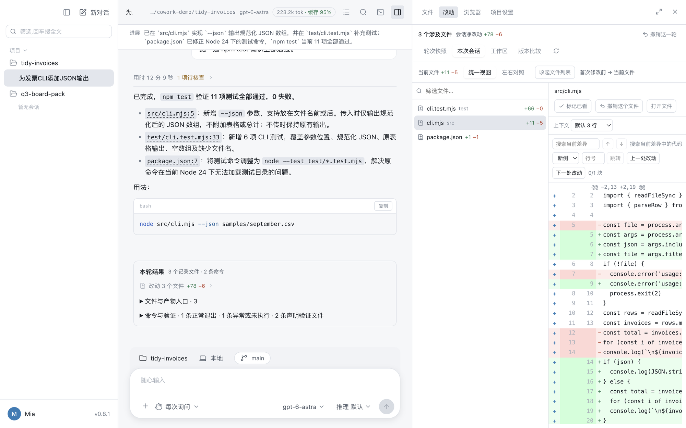
A coding agent's loop, out of the terminal and onto the whole machine.
cowork brings an agent loop onto the desktop, then hands it the rest of the machine: a browser it drives, control of your other apps, document generation, a sandbox around its commands, and memory that lasts across sessions. It speaks protocols, not vendors, so any OpenAI-compatible or Anthropic-style endpoint works.
Reads the repository, makes the change, runs the tests.
A file tree, a built-in editor, a terminal, git, worktrees, and a diff of everything it touched. It works the way a coding agent does, with the project open beside the conversation.
Reads the files you already have, hands back finished ones.
Reports, workbooks, and decks are read and written as real Office files, with no Office install. Older binary formats are read too, and PDFs, CSVs, and images open in the same viewer.
It acts. You approve.
Every write, command, and external tool call is risk-classified and gated. You decide at the moment that carries information, and what you grant stays visible and revocable.
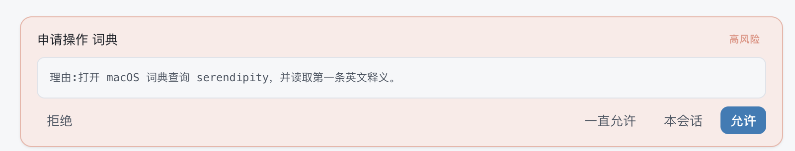
The project, open beside the conversation.
A file tree with git status, tabs, and a full editor sit in the side panel, and the panel expands to the whole window when you want to read. A file the agent mentions is a link: click it and it opens at that line.
- File tree with search, git markers, and open-with for your own editor
- Built-in editor with find, replace, folding, and conflict-safe saving
- Mentions like src/cli.mjs:42 jump straight to the line
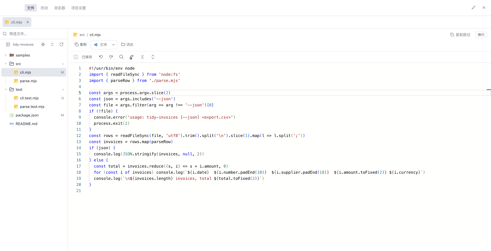
Every change, reviewed before you keep it.
Each turn ends with a receipt of what was touched. Read the diff unified or side by side, scoped to the last turn, the whole session, the working tree, or any two revisions, and take back what you do not want.
- Unified and side-by-side views with search and jump to change
- Undo a single file or a whole turn, including files git does not track
- Stage or restore individual hunks, then commit from the panel
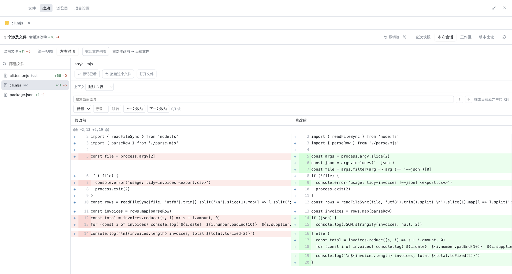
Real documents in, real documents out.
Hand it a spreadsheet, a report, or a deck and it edits the real file, keeping formulas, merged cells, and styles. It generates Word, Excel, and PowerPoint as Office Open XML with no Office install, then renders the first page to check its own work. The result opens in the side panel, next to the conversation that made it.
- Reads .docx, .xlsx, .pptx, the older .doc, .xls, .ppt, and PDF
- Writes .docx, .xlsx, .pptx, edits existing decks, and self-checks a render
- Previews documents, sheets, slides, PDF, CSV, Markdown, and images in place
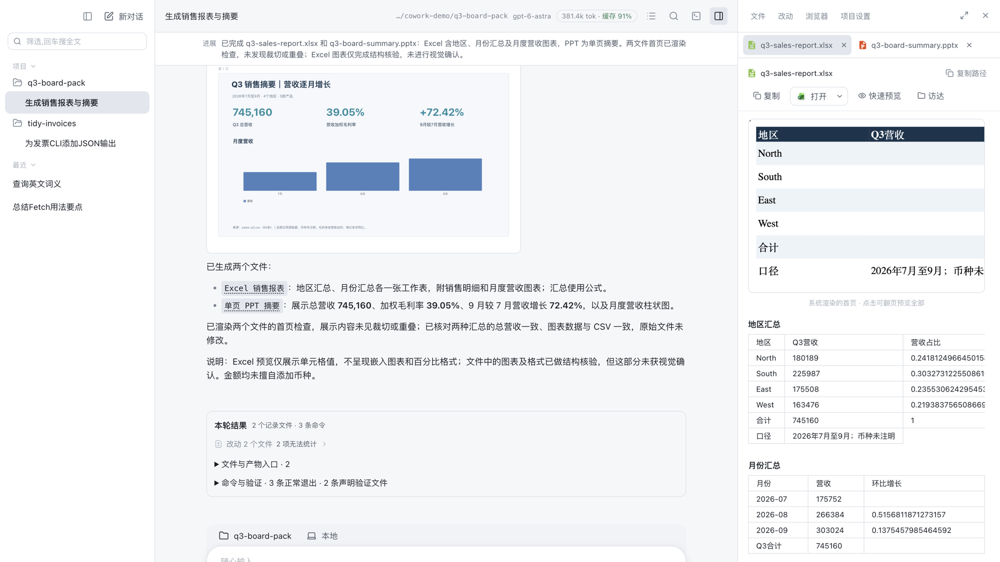
A browser it drives, side by side with the conversation.
An embedded browser is driven through the accessibility tree by role and name, not brittle pixel coordinates. The page stays open next to the transcript, so you see what it read and what it concluded.
- Elements addressed by role and name
- Tools a page declares are picked up automatically
- The same approach reaches your other apps
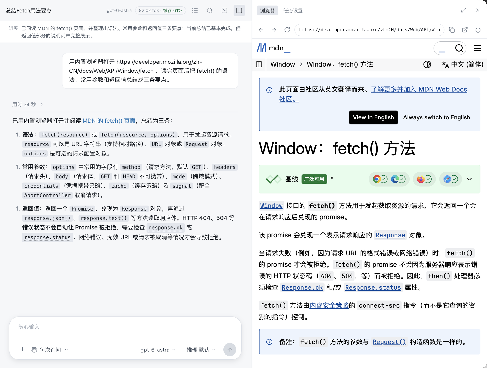
Your other apps, with a picture-in-picture of what it touches.
It reads an app's accessibility tree and acts in the background where it can. A live thumbnail shows the window it is driving, with the cursor it is about to use.
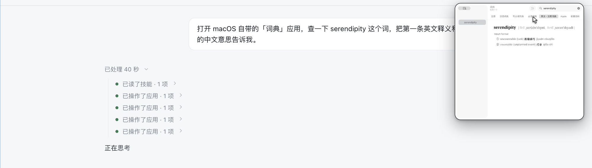
Per-app authorization
It asks before touching an app, and the grant lasts for the session.
Background first
Clicks and text go through the accessibility interface when possible, without stealing your mouse.
Honest when it cannot see
When a window will not expose its elements, it says so instead of guessing.
Four tasks, start to finish.
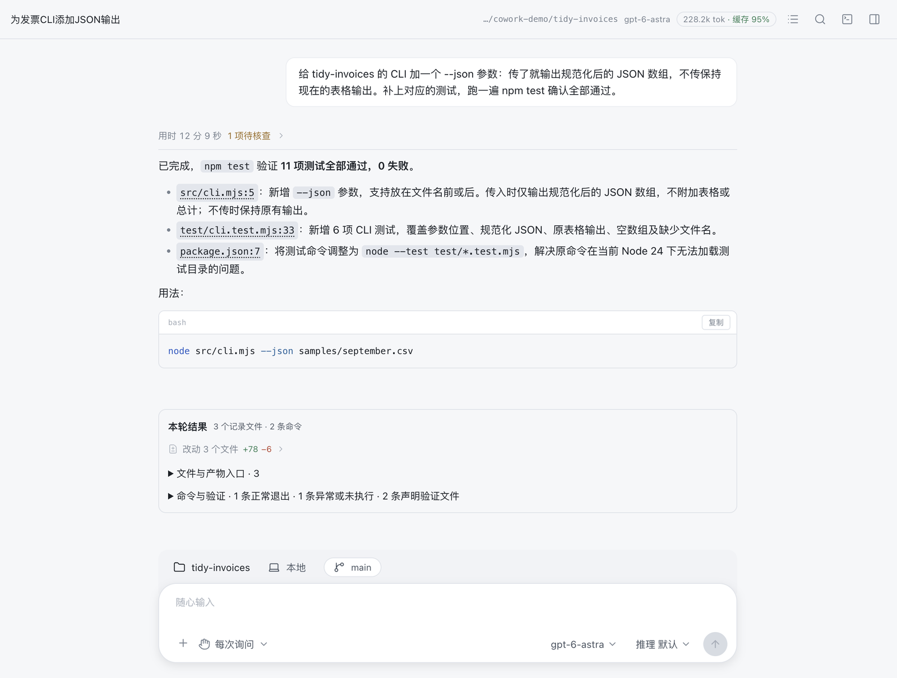
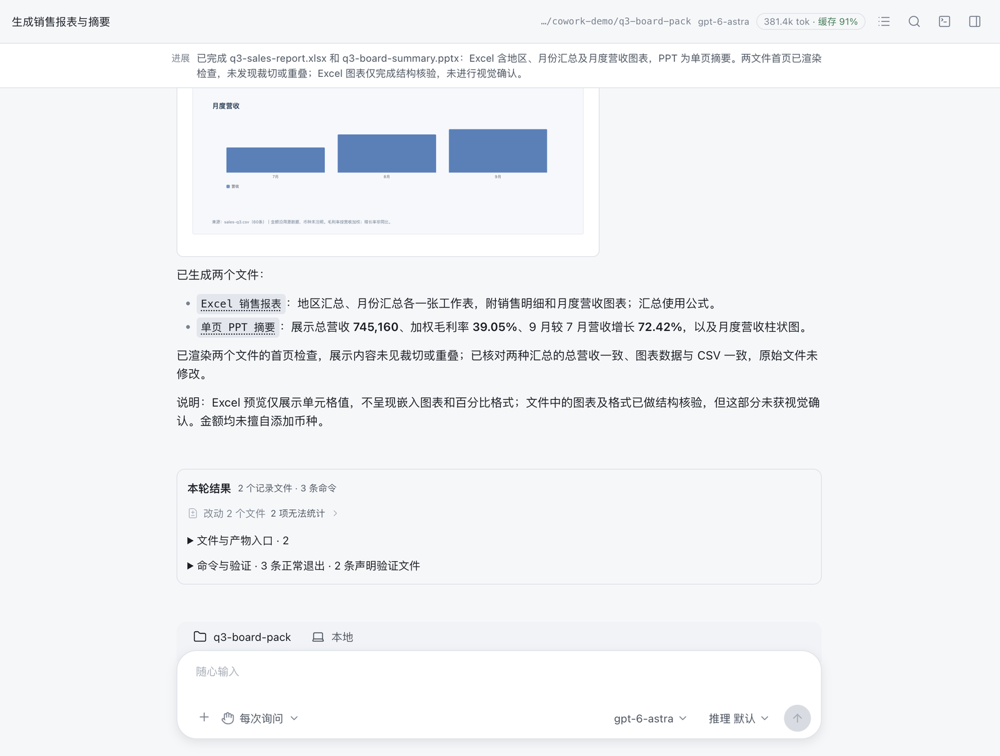
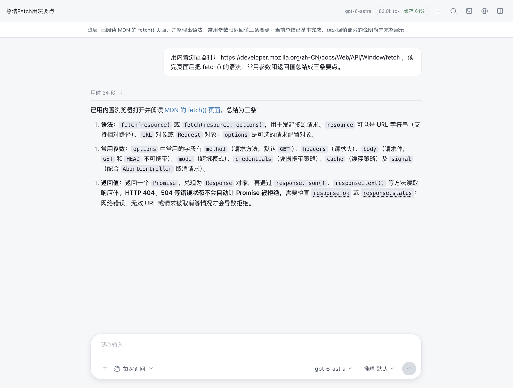
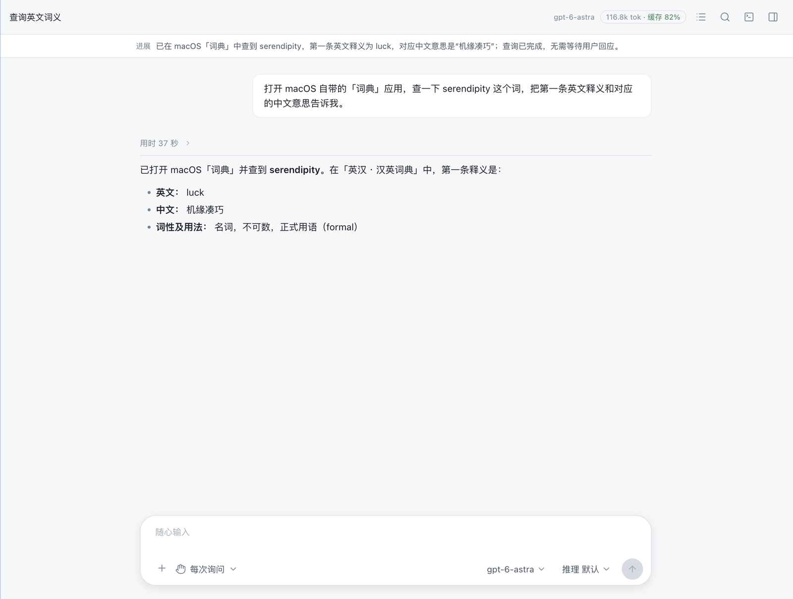
Built to run long tasks, not just answer.
The loop is designed so a long job does not drown its own context, and so you can see what it changed.
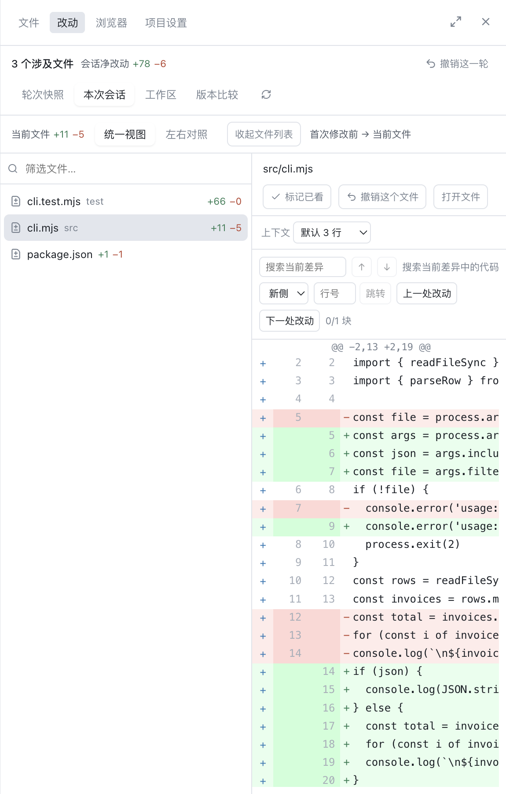
Per-file review
Diffs, a change receipt, and undo per file.
Context that lasts
Compaction past 80 percent of the window, pairing-safe, with originals archived. A background recap keeps a long run legible.
Code Mode
For read-heavy work it writes a small program to orchestrate tools. Only what it prints enters the context.
const files = await glob('src/**/*.ts')
for (const f of files) scan(f)
print(summary) // only this returnsParallel and delegated
Independent tool calls run at once; sub-agents take isolated side quests and return only the conclusion.
Project memory, skills, MCP
It learns your conventions across sessions. Agent Skills and Model Context Protocol servers extend what it can do.
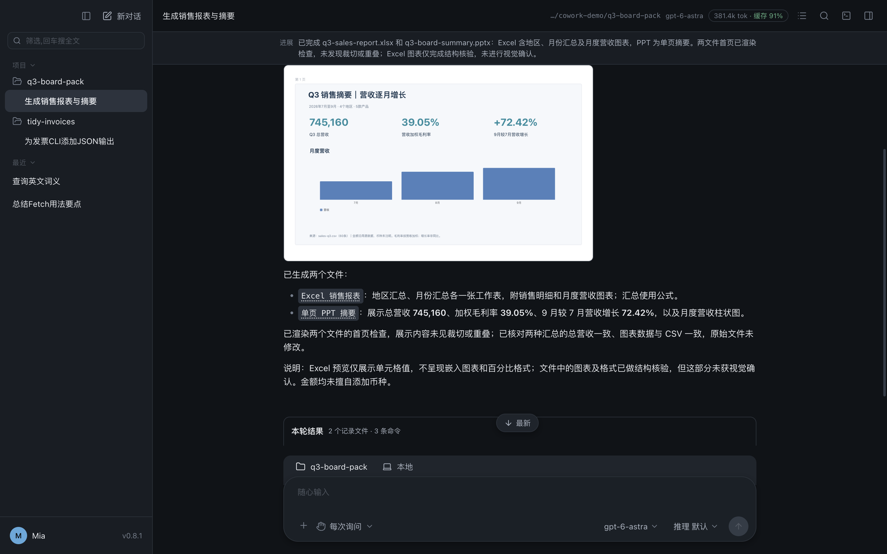
Light, dark, and three more themes
A high-density desktop tool that follows your system.
Not tied to any vendor.
The app speaks protocols, not services. Switching backends is a change of URL, no code. Hosted service, gateway, or a local model on your own box all work the same way. There is no built-in model list on purpose, so nothing goes stale.
Give the agent the whole machine.
Free. Bring your own model. Every consequential action stays behind your approval.